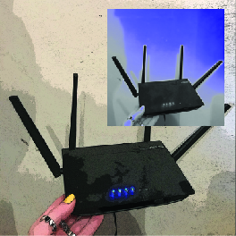

The internet is a worldwide system of computer networks - a network of networks which a user at any one computer can, if they have permission, get information from any other computer (and sometimes talk directly to users at other computers).
WIFI is offered almost everywhere, with it being a wireless networking technology that uses radio waves to provide wireless high-speed Internet and network connections to customers. Most homes, offices and buildings have WIFI modems helping users to connect their devices to the internet, with the router broadcasting the WiFi signal, allowing your devices to connect to each other and the Internet. HOVER HERE to see what a modem looks like 
Here is an article with 19 Mind-Blowing Facts About The Internet
Southern Cross Cables owns and operates a trans-Pacific submarine cable network connecting Australia, New Zealand, Fiji and Hawaii to the internet backbone on the United States West Coast. The cable which was completed in February 2001 has a current capacity of 5.4 Tbit/s. The network is 30,500 km in length, and has nine cable landing stations (including two in New Zealand). Both cables in the network contain six optical fibres (3 fibre pairs) between Sydney and Hawaii, and eight fibres (4 fibre pairs) between Hawaii and the US West Coast.